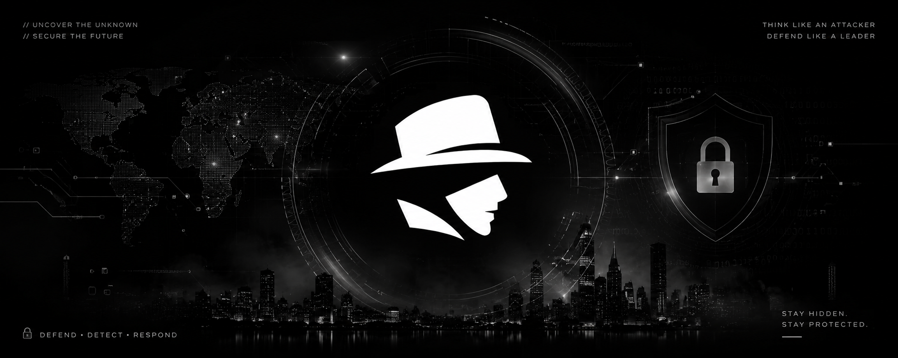

About MYSTERY
MYSTERY is a specialized security collective founded by penetration testers and vulnerability researchers committed to deep manual security testing.
Research-Driven Approach
Our security researchers spend their time dissecting zero-day vulnerabilities, building offensive security tools, and reporting high-severity security flaws to major software vendors.
When you work with MYSTERY, that exact research mindset is applied directly to your web apps, mobile clients, APIs, and internal networks.
=======Our Security Philosophy
Modern applications are increasingly complex, built with cloud-native frameworks, microservices, and rapid deployment pipelines. Automated vulnerability scanners only scrape the surface—missing critical logic flaws and complex multi-step attack vectors.
At MYSTERY, we simulate real threat actors by combining hands-on technical manual analysis, custom security tooling, and continuous vulnerability research to uncover impactful flaws before malicious actors can exploit them.
>>>>>>> 52d21ea (style & refactor: integrate new brand logo, remove generic AI badges, polish professional UX)